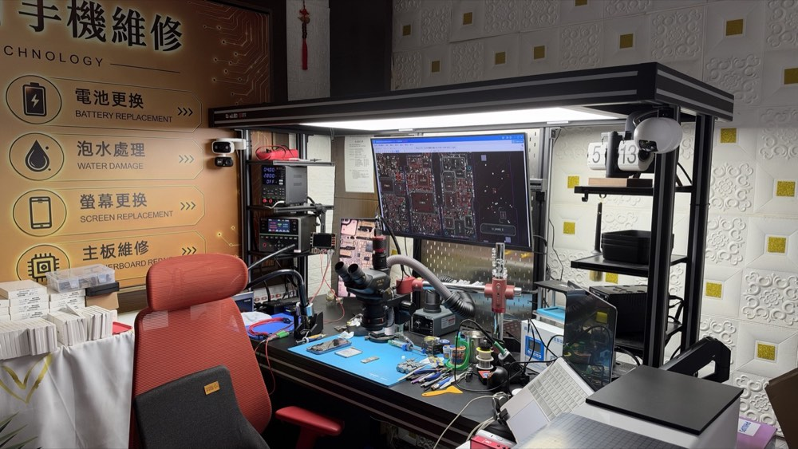

台中龍井・東海商圈｜iPhone、Android 手機與平板維修，先報價、您同意才修，維修過程現場看得到。

支援 iPhone、iPad，以及三星、OPPO、vivo、小米、Google、華碩等 Android 手機。
很多不開機、沒訊號，其實只是主機板上一顆小零件壞掉。我們在顯微鏡底下找出壞掉的零件，只換那一顆，不用整片主機板換掉，修好資料通常都還在。
檢測要不要錢、資料會不會不見？看常見問題 →